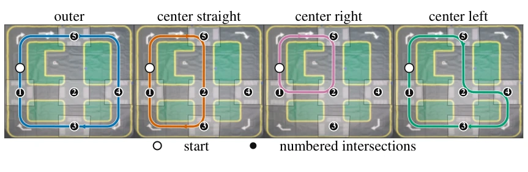
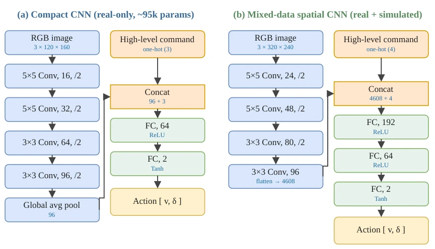
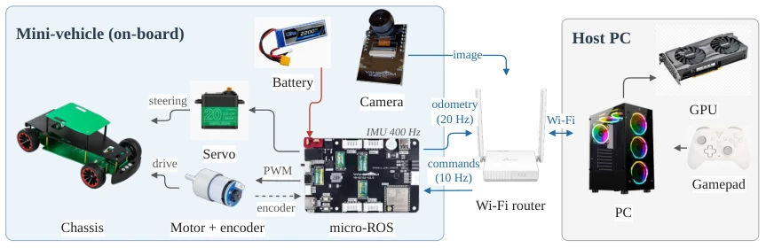
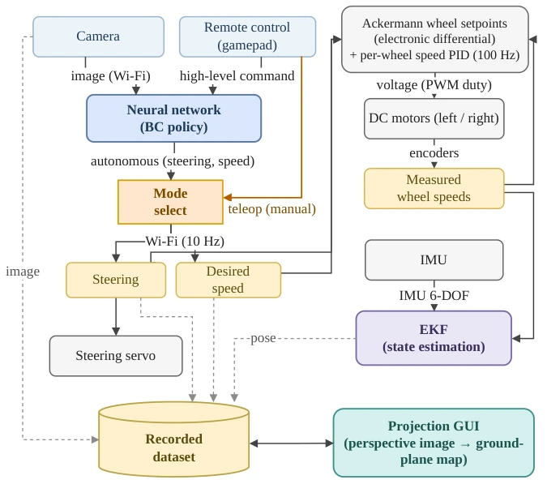
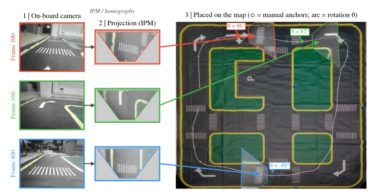
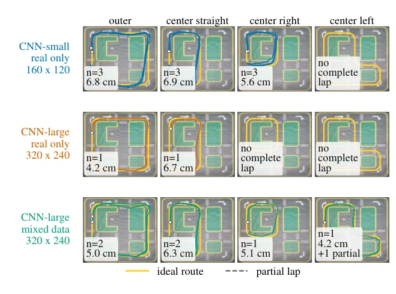

This paper builds a "small yet fully equipped" mini autonomous driving testbed. The authors use a Jacob chassis vehicle combined with a printed track, paired with Webots simulation, attempting to solve the evaluation challenges of end-to-end autonomous driving in real physical environments. The highlight lies in being open-source and low-cost, making reproduction easy. However, critically speaking, there are too few physical experiments, trajectory registration still requires manual alignment, so the level of automation is somewhat questionable. The so-called "large-scale" simulation data still has to rely on synthetic data to make up for it in front of the real world. The conclusion is: large models plus synthetic data are indeed strong, but small models can also run in the real world, though they tend to crash when turning. Additionally, the field of view in simulation has a huge impact on performance, reminding us not to ignore hardware details.
研究动机Motivation
现有端到端自动驾驶研究多依赖大规模仿真器（如CARLA [Dosovitskiy et al. 2017]），但仿真无法完全覆盖物理约束（延迟、执行器误差等）。低成本模型车（如F1TENTH [O’Kelly et al. 2020]）提供了中间步骤，但缺乏统一的开源平台支持仿真到真实（Sim-to-Real）的严谨评估。本文旨在填补这一空白，提供一个可控环境，让在仿真中开发的架构能在真实硬件上重新评估，解决分布偏移和物理限制问题。特别是针对命令条件化模仿学习在真实场景中的歧义性问题，提供了物理验证基线。
Existing end-to-end autonomous driving research mostly relies on large-scale simulators (such as CARLA [Dosovitskiy et al. 2017]), but simulation cannot fully cover physical constraints (latency, actuator errors, etc.). Low-cost model cars (such as F1TENTH [O’Kelly et al. 2020]) provide an intermediate step, but lack a unified open-source platform supporting rigorous evaluation of simulation-to-real (Sim-to-Real). This paper aims to fill this gap, providing a controllable environment where architectures developed in simulation can be re-evaluated on real hardware, solving distribution shift and physical limitation issues. Especially regarding the ambiguity of command-conditioned imitation learning in real scenarios, it provides a physical validation baseline.

Figure 3. The four ideal routes on the rectified mat used as the Webots floor texture. Each panel shows one route, driven in a single direction from the shared start marker (white circle). Numbered markers indicate the labelled intersections used for command annotation.
The overall process is: Data Collection (Teleoperation) -> Training (Behavior Cloning) -> Deployment. The core is Command-Conditioned Behavior Cloning, where the policy receives RGB images and discrete navigation commands (straight/left/right turn), outputting steering and speed. The network architecture is divided into a compact version (~95k parameters) and a large-capacity version (~1M parameters). To enhance generalization, the authors built a Sim-to-Real data pipeline: generating synthetic data in Webots digital twin, using a U-Net image translator to narrow the appearance gap between simulation and real cameras, and mixed training. The physical platform is based on ESP32-S3 and micro-ROS, achieving low-latency control. The loss function adopts weighted mean squared error, with the speed term having a lower weight. Additionally, by using projection geometry to map images to the map plane, cross-track error calculation is achieved.

Figure 1. Policy architectures. (a) The compact command-conditioned CNN base- line (94,882 parameters): a convolutional encoder with global average pool- ing whose embedding is concatenated with the one-hot command and de- coded by a two-layer MLP. (b) The larger command-conditioned variant: a spatial encoder whose flattened features are concatenated with the com- mand and decoded by a three-layer MLP.

Figure 2. Experimental setup, split into the on-board mini-vehicle and the host PC: the ESP32-S3 micro-ROS board closes the 100 Hz speed PID loop and drives the servo, while a separate ESP32 camera streams images to the host PC, which runs the policy and the extended Kalman filter and returns steering and speed commands.

Figure 4. End-to-end signal flow. During data collection a human teleoperates the vehicle and the mode-select logs the commanded steering/speed—with the camera image and the EKF pose—into the recorded dataset; at deployment the behavior-cloning policy replaces the teleoperator, producing steering and a speed setpoint; on board, steering drives the servo and, with the speed setpoint, defines per-wheel setpoints (Ackermann electronic differ- ential) for the 100 Hz PID loops, while the projection GUI maps recorded images to the ground plane.
The dataset contains 41 human teleoperation sessions (~19k frames) and Webots synthesized 96 laps data. The baseline is compact CNN, comparing large-capacity network and mixed data training. The metric is Cross-Track Error. Physical experiments show, compact policy average error 6.1cm, close to human demonstration (4.7cm). Ablation experiments show, camera field of view (FoV) in simulation increased from 58 degrees to 120 degrees, error decreased from 35.6cm to 3.3cm. The most critical point is, only large-capacity network combined with Sim-to-Real synthetic data can complete all 4 routes (including left turn), large network trained purely on real vehicle data instead failed. This proves synthetic data is crucial for improving strategy generalization capability, especially in complex maneuvers.

Figure 6. Map-registered localization of an outer-loop run: per-frame camera im- ages are projected to the ground plane and the reconstructed trajectory is overlaid on the rectified map, illustrating the registration behind the cross- track-error metric.

Figure 7. Comparison of map-registered neural-control laps by policy variant. Each row groups the autonomous runs from one policy; columns show the four route loops. Colored lines are registered real-robot laps, dashed lines are partial laps, yellow lines are ideal routes, and each panel reports the mean cross-track error over complete laps.